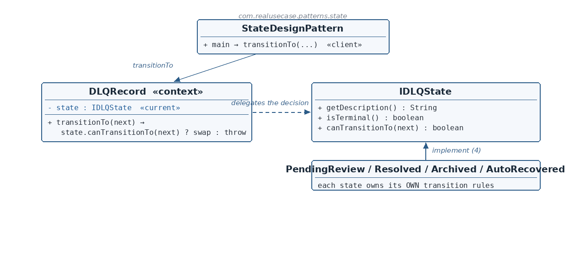

IDLQState.java — the State interface
☕ 4 min read · 🎬 Video walkthrough · 📊 UML diagram · 💻 Runnable code
⚡ In a nutshell — Let an object's behavior change when its internal state changes — by making each state its own class.
Let an object's behavior change when its internal state changes — by making each state its own class. The context holds a reference to its current state object and delegates state-dependent decisions to it polymorphically. No switch on a status field, anywhere.
Each state class owns the rules that are valid in that state — including which transitions are legal.
Dead-letter-queue (DLQ) records travel through a lifecycle: PENDING_REVIEW → resolved, archived, or auto-recovered. Terminal states must reject re-opening — allowing ARCHIVED → PENDING_REVIEW would resurrect dead messages. Modeled as an enum plus scattered switch statements, these rules smear across the codebase and drift. The production fix is polymorphic State: one class per status, each owning its legality rules, and a DLQRecord context that enforces every transition through the current state object.
IDLQState is the State interface: description, isTerminal(), and the key method — canTransitionTo(next).PendingReviewState (non-terminal, may go anywhere), and three terminal states (Resolved, Archived, AutoRecovered) that permit only self-transitions.DLQRecord is the context: holds the current IDLQState and, in transitionTo, asks the current state whether the move is legal — swapping on yes, throwing on no.
Reading the diagram: the context's transitionTo delegates the legality decision to its current state object (dashed arrow). The four concrete states each carry their own rules — the context has none.
IDLQState — State interface — behavior valid in a state, including transition legality.PendingReviewState — Non-terminal state — permits transition to any status.ResolvedState / ArchivedState / AutoRecoveredState — Terminal states — permit only self-transition.DLQRecord — Context — holds current state, enforces transitions through it.StateDesignPattern — Client — exercises legal, illegal, and self transitions.public interface IDLQState {
String getDescription();
boolean isTerminal();
boolean canTransitionTo(IDLQState nextState);
}
nextState? The last one is the heart — legality is the current state's knowledge.PendingReviewState.java — the non-terminal statepublic class PendingReviewState implements IDLQState {
@Override public String getDescription() { return "Waiting for manual review"; }
@Override public boolean isTerminal() { return false; }
@Override public boolean canTransitionTo(IDLQState nextState) {
return nextState instanceof PendingReviewState
|| nextState instanceof ResolvedState
|| nextState instanceof ArchivedState
|| nextState instanceof AutoRecoveredState;
}
@Override public String toString() { return "PENDING_REVIEW"; }
}
ArchivedState.java — a terminal state@Override public boolean isTerminal() { return true; }
@Override public boolean canTransitionTo(IDLQState nextState) {
return nextState instanceof ArchivedState;
}
Resolved and AutoRecovered are identical in shape with their own identities.DLQRecord.java — the contextpublic class DLQRecord {
private final String id;
private IDLQState state = new PendingReviewState();
public void transitionTo(IDLQState nextState) {
if (!state.canTransitionTo(nextState)) {
throw new IllegalStateException(
"Illegal DLQ status transition: " + state + " -> " + nextState);
}
state = nextState;
}
}
PENDING_REVIEW — a correct initial state by construction.transitionTo is the whole pattern in four lines: ask the current state whether the move is legal (polymorphic dispatch — the context has no idea which rules apply), then swap or throw. The context enforces; the states decide.StateDesignPattern.java — the clientDLQRecord record = new DLQRecord("dlq-1"); // PENDING_REVIEW
record.transitionTo(new ArchivedState()); // legal
record.transitionTo(new PendingReviewState()); // ILLEGAL -> throws
record.transitionTo(new ArchivedState()); // self-transition: ok
isTerminal() on two states.IllegalStateException names both states and fails fast — the invariant stays enforced.$ java -cp target/classes com.realusecase.patterns.StateDesignPattern
dlq-1 status: PENDING_REVIEW
after archive: ARCHIVED
rejected: Illegal DLQ status transition: ARCHIVED -> PENDING_REVIEW
self transition ok: ARCHIVED
PENDING_REVIEW terminal: false, ARCHIVED terminal: true
Each state knows its own rules; the context just asks the one it's in.
👏 Found this useful? Give it a few claps so more developers discover it, and follow for the whole series — every article ships with a UML diagram, runnable code, a narrated video, and a companion PDF. Happy building! 🚀